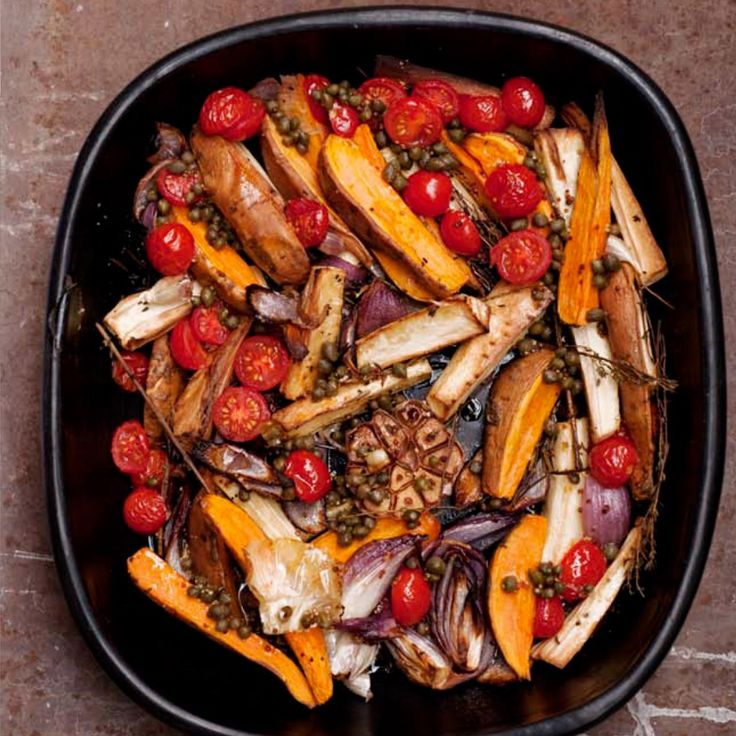

Roasted parsnips and sweet potatoes with caper vinaigrette

Treat this recipe as a blueprint for an infinite number of roast vegetable dishes. The point here is to lighten up long-cooked veggies with something crisp and fresh. You can use any of your favourite vegetables – swede, potato, carrot, salsify, beetroot, cauliflower – and many other refreshing combinations at the end: chopped herbs such as basil or mint, grated lemon zest, harissa paste, crushed garlic or a mellow vinegar.
Preheat the oven to 190°C/Gas Mark 5. Peel the parsnips and cut into two or three segments, depending on their lengths. Then cut each piece lengthways into two or four. You want pieces roughly 5cm long and 1.5cm wide. Peel the onions and cut each into six wedges.
Place the parsnips and onions in a large mixing bowl and add 120ml of the olive oil, the thyme, rosemary, garlic, 1 teaspoon of salt and some pepper. Mix well and spread out in a large roasting tin. Roast for 20 minutes.
While the parsnips are cooking, top and tail the sweet potatoes. Cut them (with their skins) widthways in half, then each half into six wedges. Add the potatoes to the tin with the parsnips and onion and stir well. Return to the oven to roast for a further 40–50 minutes.
When all the vegetables are cooked through and have taken on a golden colour, stir in the halved tomatoes. Roast for 10 more minutes. Meanwhile, whisk together the lemon juice, capers, maple syrup, mustard, remaining 2 tablespoons oil and ½ teaspoon salt.
Pour the dressing over the roasted vegetables as soon as you take them out of the oven. Stir well, then taste and adjust the seasoning. Scatter the sesame seeds over the vegetables if using and serve at the table in the roasting tin.